AbletonLive to ICST Ambisonics MultiEncoder in Reaper
Institute for Computer Music and Sound Technology / (ICST) Zurich University of the Arts
AbletonLive to ICST Ambisonics MultiEncoder in Reaper
This tutorial provides a detailed guide to recording 7th-Order Ambisonics using Ableton Live and Reaper. It is aimed at users with a basic knowledge of both programs. If you are familiar with the concepts of Ableton Live, Reaper, and Ambisonics, the steps should be straightforward. Otherwise, some sections may be challenging. In this case, it is recommended that you first learn the basics of this software and Ambisonics technology.
Ableton to ICST MultiEncoder in Reaper
Ableton transmits audio via “BlackHole” (up to 64 channels) to Reaper’s BlackHole input devices.
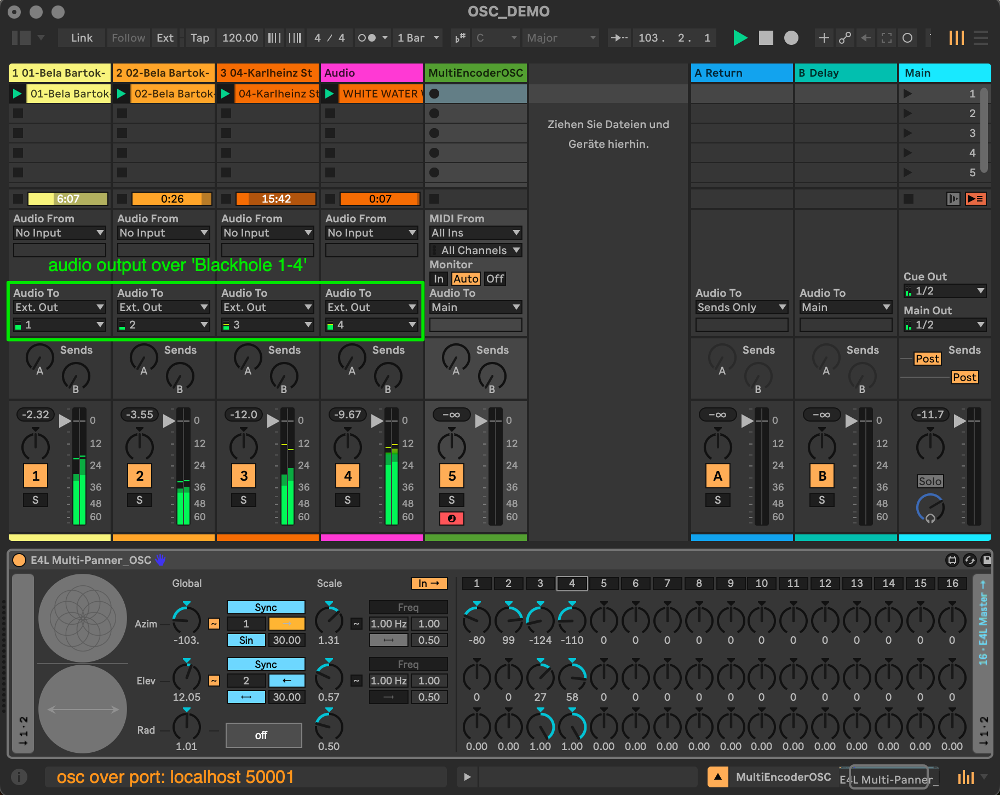
The Multi-Panner-OSC can send up to 16 OSC channels to the ICST Multi-AmbiEncoder via localhost on port 50001. In Reaper, audio inputs from BlackHole (1-4) are received, while the ICST Multi-AmbiEncoder processes OSC sources (1-16).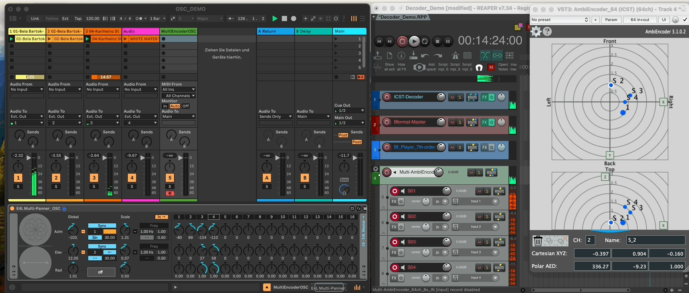
This setup allows recording B-format up to the 7th order from Ableton Live 12.
How It Works
Schematic Overview:
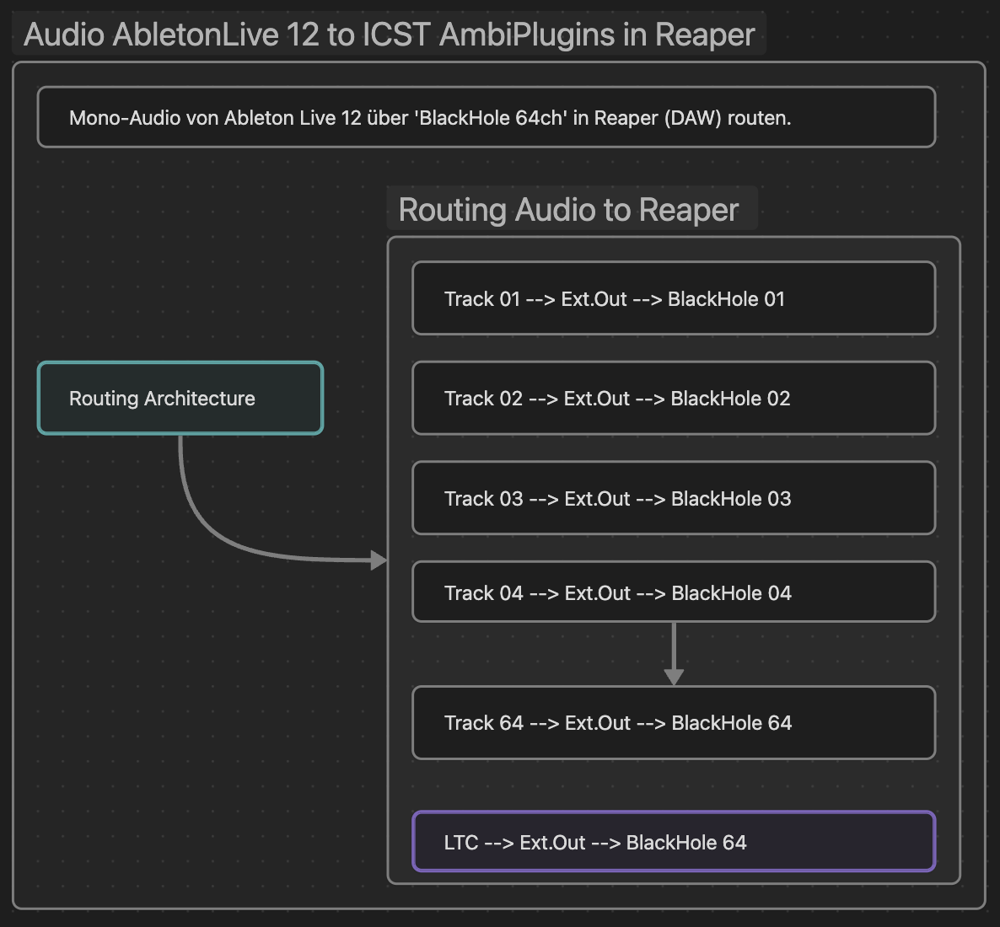
Preparation:
- Install AbletonLive 12
- Install Reaper (DAW)
- Install BlackHole64
- Download: E4L_Multi-Panner_OSC.adv This is a modified panner from EnvelopforLive
Setup
In Ableton Live
- Create up to 64 mono/stereo tracks with audio or MIDI content.
- Route outputs as external outs (1-64).
- Reserve Track 64 for the LTC timecode.
Note: I read that there could be difficulties with bi-directional synchronization between Reaper and Ableton Live. So I decided on the stable LTC Timecode variant.
-
Create spatialization tracks using ‘E4L_Multi-Panner_OSC.adv’ for automation (max 16 sources per panner).
-
Optionally, send custom OSC spatialization data from Max to ensure consistent OSC port numbers in Reaper (port: 50001).
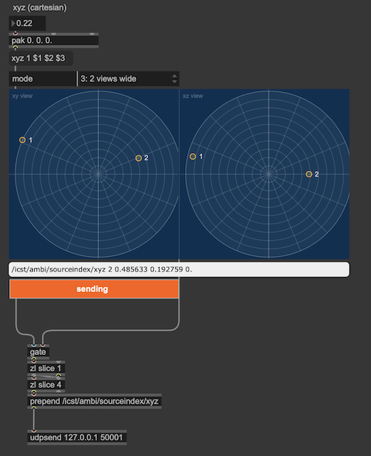
Tip: Make sure you use the same OSC port numbers in Reaper. (port: 50001)
In Reaper
-
Create a session with 63 mono tracks (Track 64 for LTC timecode).
-
Enable LTC sync input on Track 64 by right-clicking the Playbar.
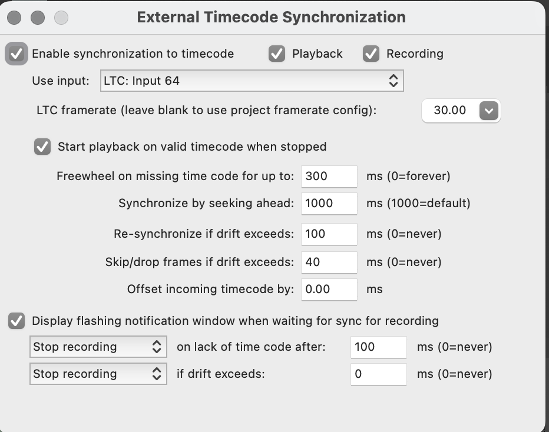
-
Set all active tracks to “Record: Disable (monitor only).”
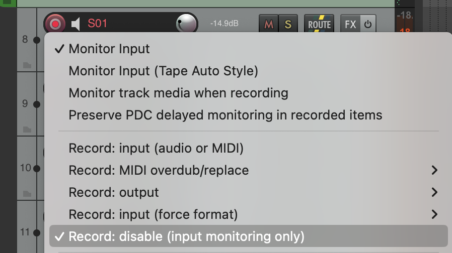
-
Route Tracks 1-63 to ICST MultiEncoder_64.
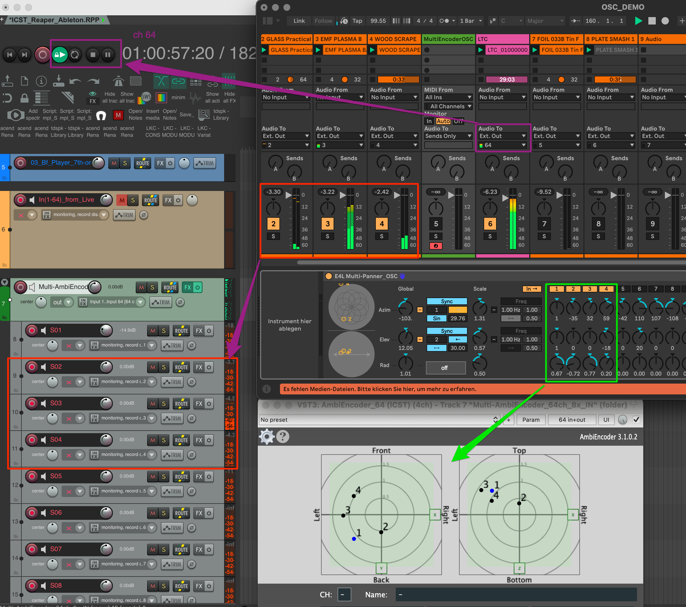
- When correctly routed, the source appears in the encoder radar for verification.
-
Configure OSC connection between Ableton and ICST MultiEncoder. Each encoder requires its own OSC port.
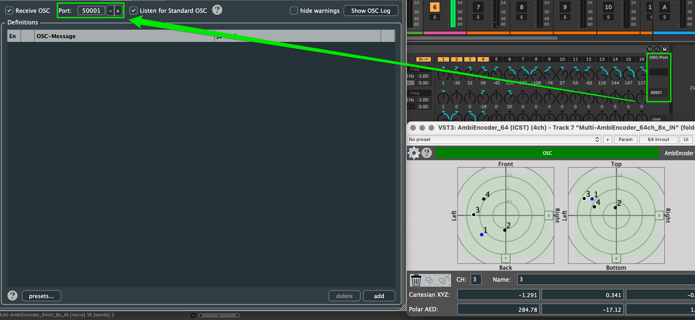
-
Activate OSC transmission in E4L_Multi-Panner. The ICST MultiEncoder will display moving dots when receiving OSC data.
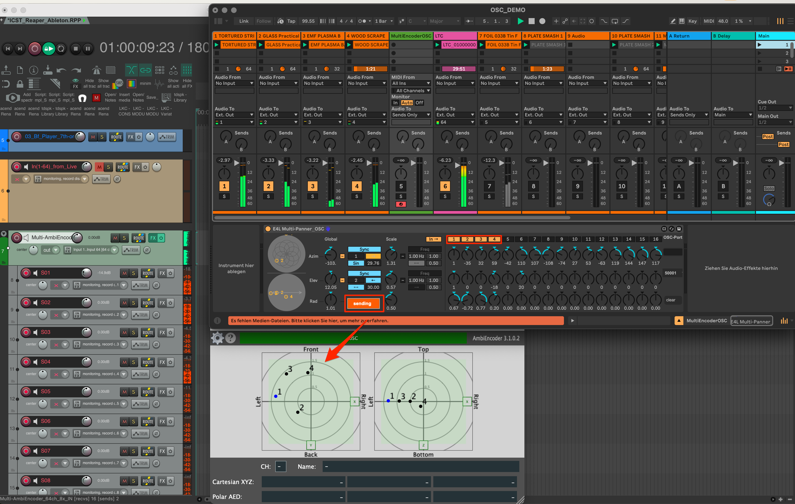
-
In Reaper press Record -Output for recording your Bformat see next image.
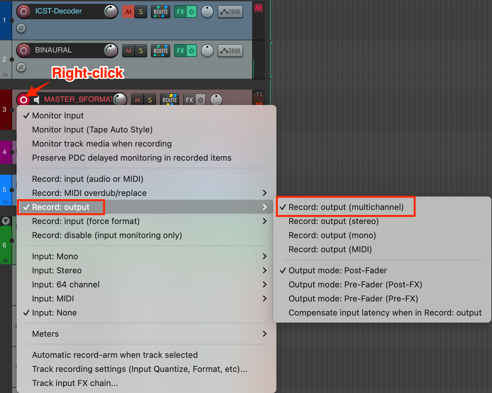
-
Then press REC in Reaper -> you get the follow message “Waiting for Timecode”
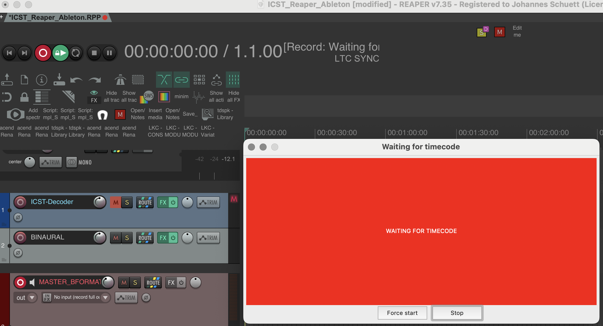
-
Press play in Ableton Live to synchronize Reaper via LTC Sync (Input 64), enabling B-format 7th-order ambix recording.
-
Move to the Start Marker at 01:00:000 (LTC has a 60’ offset), then press Fire or Play in Ableton Live to start recording.
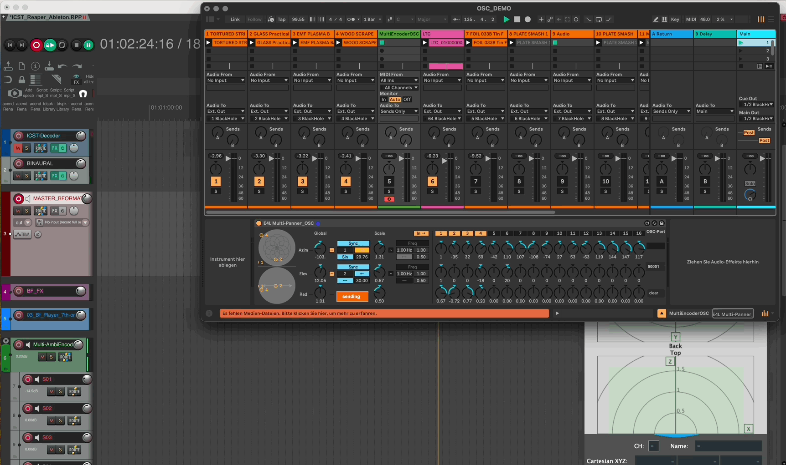
For more details, refer to the documentation for Ableton Live, Reaper, and the ICST MultiEncoder.
©2025 ICST